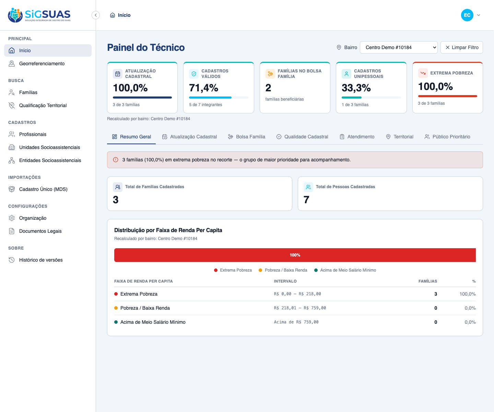
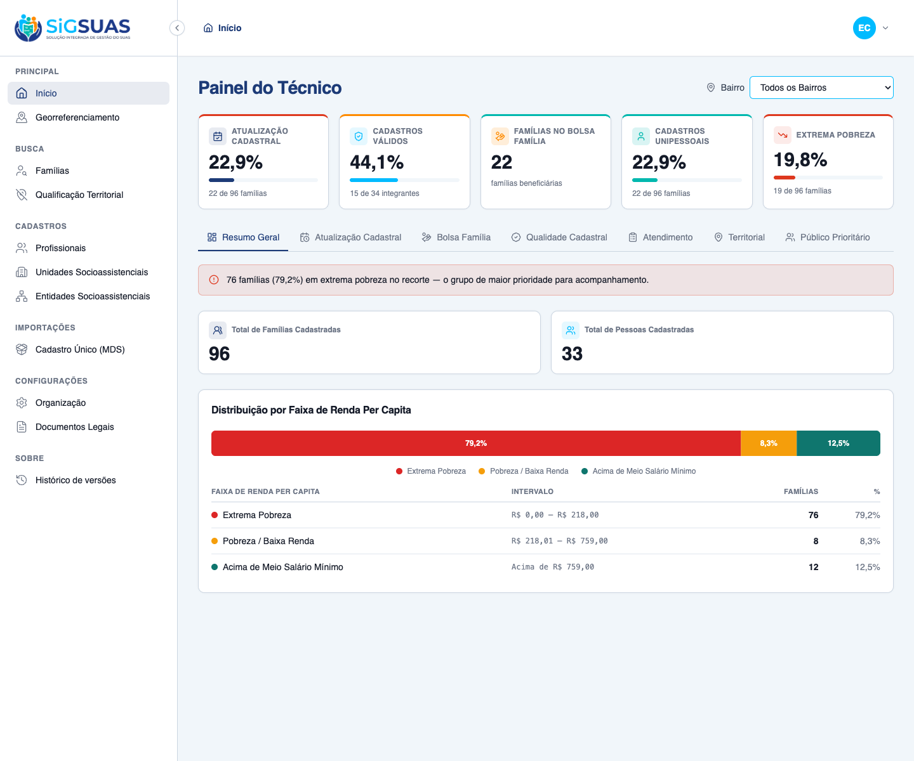
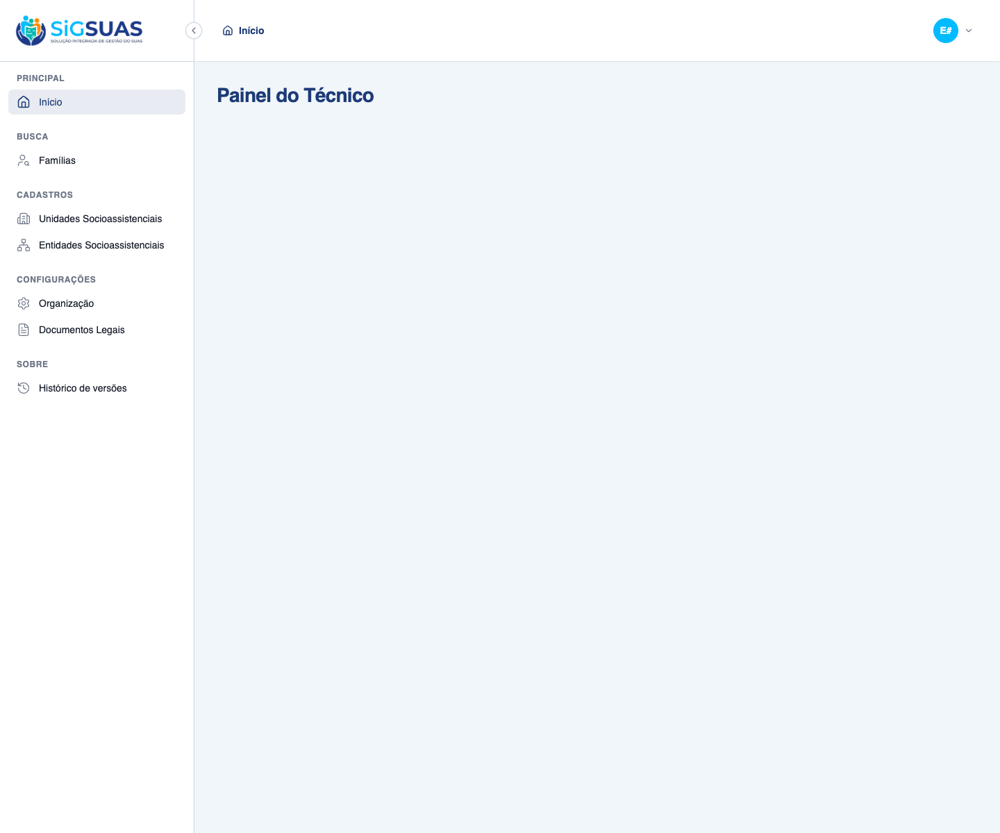

Relatório de Critérios de Aceite — Barra de Indicadores Estratégicos (KPIs)
Resumo
6 Critérios de Aceite verificados. 4 por navegador (CA01 exibição persistente, CA02 recálculo por bairro, CA03 limpar filtro, CA05 gate de permissão na UI) e 2 pela suíte automatizada Pest (CA04 isolamento/validação de bairro, CA06 denominador zero). A barra renderiza os 5 KPIs do RN02: na visão municipal Atualização 22,9% · Válidos 44,1% · Bolsa Família 22 · Unipessoais 22,9% · Extrema Pobreza 19,8%; ao selecionar o bairro "Centro Demo #10184" (recorte espacial ST_Contains, 3 de 96 famílias) recalcula para 100,0% · 71,4% · 2 · 33,3% · 100,0% e volta ao municipal ao limpar o filtro. Endpoint respondeu 200 para o Master (com e sem neighborhood_uuid) e a barra fica oculta (sem chamada ao endpoint) para o Operador sem a permissão dedicada. Suíte: 16 testes, 64 asserções, todos verdes.
| CA | Critério | Status |
|---|---|---|
| CA01 | Exibição persistente dos KPIs | ATENDIDO · navegador |
| CA02 | Recálculo por bairro selecionado | ATENDIDO · navegador |
| CA03 | Limpar filtro (RG01) | ATENDIDO · navegador |
| CA04 | Isolamento multi-tenant e validação do bairro | ATENDIDO · automatizado |
| CA05 | Gate de permissão (dashboard.view-indicators) | ATENDIDO · navegador + automatizado |
| CA06 | Denominador zero → percentuais 0 (RN02.2) | ATENDIDO · automatizado |
CA01 — Exibição persistente dos KPIs ATENDIDO · navegador
Critério (Gherkin): Dado que navego entre as abas/telas do dashboard, Quando altero de painel, Então os 5 cartões do topo fixo permanecem visíveis sem reiniciar seus valores.
Como foi testado: Login como Master (52998224725) → dashboard /app exibe a região Indicadores estratégicos com os 5 cartões. Navegação para /app/geo-panel e retorno a /app: a barra reaparece com os mesmos valores.
- A barra renderiza os 5 KPIs: Atualização Cadastral 22,9% · Cadastros Válidos 44,1% · Famílias no Bolsa Família 22 · Cadastros Unipessoais 22,9% · Extrema Pobreza 19,8%.
- Após navegar para outro módulo e voltar, os cartões permanecem visíveis com os mesmos valores (persistência).


CA02 — Recálculo por bairro selecionado ATENDIDO · navegador
Critério (Gherkin): Dado que seleciono o bairro "Centro" no filtro global, Quando a página reprocessa, Então os 5 cartões do topo recalculam seus percentuais e totais absolutos considerando apenas os moradores do Centro.
Como foi testado: Login como Master → dashboard mostra a visão municipal (96 famílias). No filtro Bairro seleciono Centro Demo #10184: o frontend chama GET /dashboard/strategic-indicators?neighborhood_uuid=61c87f4f-… (200) e os cartões recalculam. O recorte é espacial (ST_Contains, RN07): das 96 famílias, apenas as 3 geocodificadas dentro do polígono do bairro entram.
- Requisição disparada com o neighborhood_uuid do bairro selecionado (200 OK).
- KPIs recalculam de municipal (22,9% · 44,1% · 22 · 22,9% · 19,8%) para o bairro: Atualização 100,0% · Válidos 71,4% · Bolsa Família 2 · Unipessoais 33,3% · Extrema Pobreza 100,0%.
- Legenda do cartão passa a exibir "Recalculado por bairro: Centro Demo #10184".

CA03 — Limpar filtro (RG01) ATENDIDO · navegador
Critério (Gherkin): Dado que estou com o bairro "Centro" selecionado, Quando aciono "Limpar Filtro", Então a visão retorna imediatamente à consolidação municipal completa do município.
Como foi testado: Com o bairro "Centro Demo #10184" selecionado (CA02), aciono o botão Limpar Filtro: o frontend chama GET /dashboard/strategic-indicators sem neighborhood_uuid (200) e o filtro volta para Todos os Bairros.
- Requisição refeita sem neighborhood_uuid (200 OK) — recorte municipal.
- Filtro volta a "Todos os Bairros" e os 5 cartões retornam à consolidação municipal (22,9% · 44,1% · 22 · 22,9% · 19,8%).

CA04 — Isolamento multi-tenant e validação do bairro ATENDIDO · automatizado
Critério (Gherkin): Dado um usuário de um tenant, Quando solicita os indicadores, Então apenas famílias/pessoas do próprio tenant entram nos cálculos; E um neighborhood_uuid de bairro fora do município retorna 422.
Como foi testado: Coberto pela suíte Pest: DashboardIndicatorsIsolationTest ("it never counts families from another tenant") e StrategicIndicatorsTest ("422 for a neighborhood_uuid outside the tenant municipality" e "422 for a malformed neighborhood_uuid").
- Agregados nunca contam famílias de outro tenant (RN05).
- 422 para bairro fora do município do tenant e para uuid malformado.
Evidência por cobertura automatizada — ver Anexo.
CA05 — Gate de permissão (dashboard.view-indicators) ATENDIDO · navegador + automatizado
Critério (Gherkin): Dado um usuário sem a permissão dashboard.view-indicators, Quando acessa o dashboard, Então a barra de indicadores não é exibida (e o endpoint retorna 403).
Como foi testado: UI: login como Operador sem a permissão (39053344705, papel operador, vinculado ao tenant 3) → dashboard /app exibe "Painel do Técnico" sem a região "Indicadores estratégicos"; o frontend sequer chama o endpoint. Backend: Pest confirma Master e geo_panel_viewer autorizados e Operador-base negado.
- Operador sem a permissão NÃO vê a barra de KPIs (gate no frontend).
- Pest: Master (RN03) e Operador+geo_panel_viewer recebem; Operador-base é negado.
- Confirmação de permissão no banco: master=Y, operador-base=N.

CA06 — Denominador zero → percentuais 0 (RN02.2) ATENDIDO · automatizado
Critério (Gherkin): Dado um recorte sem nenhuma família, Quando os indicadores são calculados, Então cada percentual retorna 0 e cada numerador/denominador retorna 0, sem erro.
Como foi testado: Coberto pela suíte Pest: StrategicIndicatorsTest ("it returns zeroed percentages without error when the scope has no families") e DashboardIndicatorServiceTest ("it returns zero percentages without dividing by zero"). Observado também na UI antes do seed de demonstração: tenant sem famílias exibia 0,0% em todos os cartões.
- Percentuais retornam 0 sem divisão por zero quando o recorte não tem famílias.
- Comportamento observado na UI (estado zero) e garantido em unidade e feature.
Evidência por cobertura automatizada — ver Anexo.
Anexo — Cobertura automatizada (Pest — Dashboard indicators + isolamento): 16 testes, 64 asserções, todos verdes
PASS Tests\Unit\Dashboard\DashboardIndicatorServiceTest ✓ it computes the cadastral update rate from the 24-month window (KPI… 0.48s ✓ it computes valid registrations crossing persons.cpf and family_mem… 0.04s ✓ it counts distinct PBF families as an absolute total (KPI 3) 0.03s ✓ it computes the single-person rate as families with exactly one act… 0.04s ✓ it computes the extreme poverty rate against the configured thresho… 0.03s ✓ it returns zero percentages without dividing by zero when the scope… 0.01s ✓ it reads the extreme poverty threshold from config, not a hard-code… 0.02s PASS Tests\Feature\Dashboard\StrategicIndicatorsTest ✓ it returns the 5 KPIs with numerator/denominator/percentage (and to… 0.09s ✓ it returns zeroed percentages without error when the scope has no f… 0.04s ✓ it recalculates KPIs for a neighborhood, covering only geocoded fam… 0.06s ✓ it returns 422 for a neighborhood_uuid outside the tenant municipal… 0.06s ✓ it returns 422 for a malformed neighborhood_uuid 0.04s ✓ it denies the indicators to the base operator without the dedicated… 0.04s ✓ it grants the indicators to the operator once the geo_panel_viewer… 0.04s ✓ it grants the indicators to the Master without any add-on role (RN0… 0.04s PASS Tests\Feature\TenantIsolation\DashboardIndicatorsIsolationTest ✓ it never counts families from another tenant in the aggregates (RN0… 0.05s Tests: 16 passed (64 assertions) Duration: 1.53s